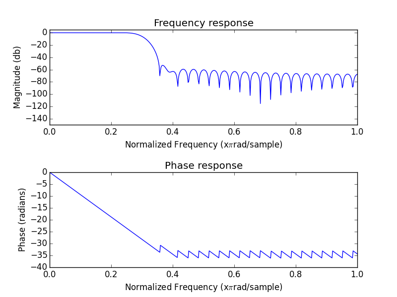
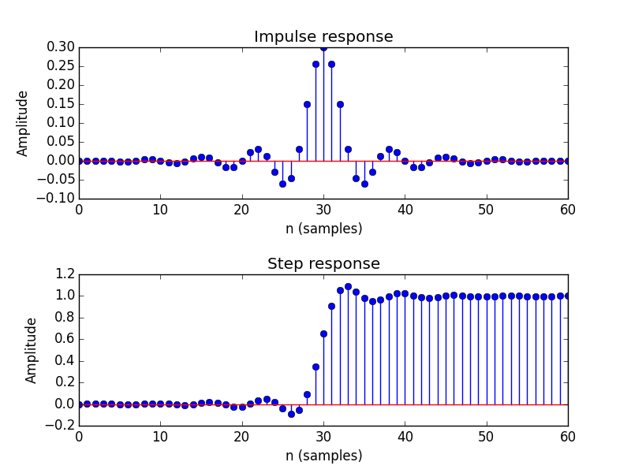
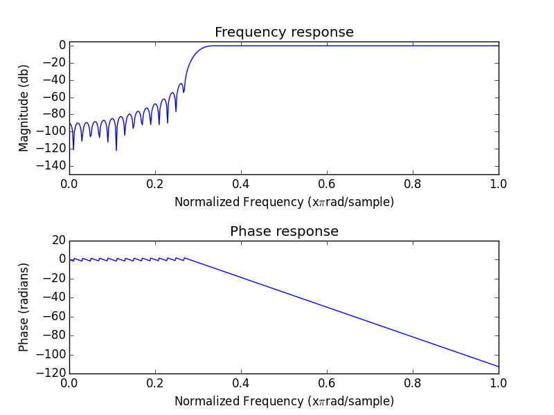

This an example of a script that can be published using Pweave. The script can be executed normally using Python or published to HTML with Pweave Text is written in markdown in lines starting with "#' " and code is executed and results are included in the published document. The concept is similar to publishing documents with MATLAB or using stitch with Knitr.
Notice that you don't need to define chunk options (see Pweave docs ), but you do need one line of whitespace between text and code. If you want to define options you can do it on using a line starting with #+. just before code e.g. #+ term=True, caption='Fancy plots.'. If you're viewing the HTML version have a look at the source to see the markup.
The code and text below comes mostly from my blog post FIR design with SciPy, but I've updated it to reflect new features in SciPy.
We'll implement lowpass, highpass and ' bandpass FIR filters. If you want to read more about DSP I highly recommend The Scientist and Engineer's Guide to Digital Signal Processing which is freely available online.
Let's first define functions to plot filter properties.
from pylab import *
import scipy.signal as signal
#Plot frequency and phase response
def mfreqz(b,a=1):
w,h = signal.freqz(b,a)
h_dB = 20 * log10 (abs(h))
subplot(211)
plot(w/max(w),h_dB)
ylim(-150, 5)
ylabel('Magnitude (db)')
xlabel(r'Normalized Frequency (x$\pi$rad/sample)')
title(r'Frequency response')
subplot(212)
h_Phase = unwrap(arctan2(imag(h),real(h)))
plot(w/max(w),h_Phase)
ylabel('Phase (radians)')
xlabel(r'Normalized Frequency (x$\pi$rad/sample)')
title(r'Phase response')
subplots_adjust(hspace=0.5)
#Plot step and impulse response
def impz(b,a=1):
l = len(b)
impulse = repeat(0.,l); impulse[0] =1.
x = arange(0,l)
response = signal.lfilter(b,a,impulse)
subplot(211)
stem(x, response)
ylabel('Amplitude')
xlabel(r'n (samples)')
title(r'Impulse response')
subplot(212)
step = cumsum(response)
stem(x, step)
ylabel('Amplitude')
xlabel(r'n (samples)')
title(r'Step response')
subplots_adjust(hspace=0.5)Designing a lowpass FIR filter is very simple to do with SciPy, all you need to do is to define the window length, cut off frequency and the window.
The Hamming window is defined as: $w(n) = \alpha - \beta\cos\frac{2\pi n}{N-1}$, where α = 0.54 and β = 0.46
The next code chunk is executed in term mode, see the Python script for syntax. Notice also that Pweave can now catch multiple figures/code chunk.
>>> n = 61
>>> a = signal.firwin(n, cutoff = 0.3, window = "hamming")
>>> #Frequency and phase response
>>> mfreqz(a)
>>> show()
>>> #Impulse and step response
>>> figure(2)
<matplotlib.figure.Figure object at 0x00000000135CBF98>
>>> impz(a)
>>> show()

Let's define a highpass FIR filter, if you compare to original blog post you'll notice that it has become easier since 2009. You don't need to do ' spectral inversion "manually" anymore!
n = 101
a = signal.firwin(n, cutoff = 0.3, window = "hanning",
pass_zero=False)
mfreqz(a)
show()
Notice that the plot has a caption defined in code chunk options.
n = 1001
a = signal.firwin(n, cutoff = [0.2, 0.5], window = 'blackmanharris',
pass_zero = False)
mfreqz(a)
show()Bandpass FIR filter.